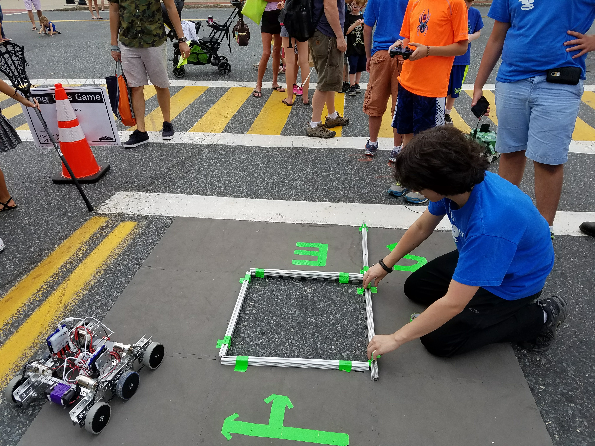

Outreach
A huge part of our work and an important aspect of FIRST culture.
Cambridge Science Carnival & Robot Zoo Booth (April 15, 2017)
In order to further spread the word of FIRST, we, along with Team Infinity, The Parity Bits, The Brainstormers, Gluten Free, We Are Robo, and Canton Robodogs, set up a booth at the Cambridge Science Carnival and Robot Zoo. At the event, we demonstrated the robot, explained how it works, and described what our team does. Many people came by and asked questions, and seemed very interested in our work. It was a lot of fun, and we hope to collaborate with other teams again sometime in the future.


Morse Institute Library Showcase 2017 (April 5, 2017)
To continue spreading the word of FIRST and inspiring children to join their local robotics team, we demonstrated our robot at the Morse Institute Library in Natick. We worked closely with the librarians to figure out how we could effectively create a successful evening. The event was open to the public, and we had many children show up to the event (it was very loud!). We let the visitors shoot into the center vortex and drive the robot around. We also saw an engineer from Mathworks, and explained the workings of our robot to him. He gave us some very helpful tips for potential improvements on the robot.
Hosting MA State Championship (March 3-4, 2017)
Along with the other RoboNatick teams, for the third year in a row, we helped host States at Natick High School! The evening before, we stayed late to help MassFTC put together and set up the competition and practice fields. We also helped set up the tables in the pit area. On the Natick Robotics YouTube page, we had a live stream of the event. After the event, we stayed late to clean up the gym and help pack up the materials. Overall, it went very well, and we were honored to have this opportunity to work closely with FTC.


Tour of IPG Photonics (February 28, 2017)
Our tour of IPG Photonics was amazing! We learned all about their work in lasers. First, they showed us a laser projector that they are working on and explained the science behind it. For their lasers, they use glass fiber in combination with elements, such as Ytterbium. This material is much smaller, cheaper, and more reliable than solid state lasers. Therefore, though the lasers cost 0.5-1 million, they are worth the investment. In addition, their projector has an impressive difference in quality with normal projectors. They are also working on a femtosecond laser and hope to start manufacturing these soon. Finally, we saw a really cool robotic arm that they are using for their work. Overall, we learned a lot and saw many intriguing machines!


Tour of Draper Laboratory (February 24, 2017)
We really enjoyed our tour of Draper Laboratory in Cambridge. We learned about their amazing projects in space exploration. They are most famous for their navigation and guidance systems, and developed the first digital control system for Apollo. We saw the actual navigation station and flight computer from Apollo. They also told us about their ongoing projects and the science behind them. We were intrigued by the amazing precision of their products. Finally, they discussed their work in intelligence and biomedical engineering. Overall, we learned a lot about the real engineering world and had a ton of fun!


Natick Days (September 10, 2016)
At the beginning of the school year, there is a town wide event called Natick Days. The town common is filled with booths from different organizations trying to advertise themselves and fundraise. Together with the other 2 RoboNatick teams, we have a booth where we fundraise, as well as have a small robot for kids to drive around and generate interest in robotics and RoboNatick. This year we used the west coast drive system to have a small racetrack for kids to drive around. While they drove we talked to parents about what we are, and even talked to some representatives from local companies who came over and expressed interest in us.
-

- 
-

-

RoboNatick Land and Sea Summer Camp (July 5-15, 2016)
One of the longest running RoboNatick outreach events is our annual land and sea robotics summer camp. Each year, we host a 2 week long camp for middle schoolers that introduces them to robotics. First, we have them build out small ROVs from a kit, and have them drive them around in the pond behind the high school. We then move on to using NXTs to build small robots to complete a series of challenges, ending with the kids building sumo bots. We have around 20-30 kids participate each year, and this camp is one of our biggest sources of new members. Every year, many new RoboNatick members join who were once campers at our land and sea camp. We will continue this camp for years to come, as it is a central part of the RoboNatick culture.


Boston Children's Hospital Health and Safety Fair (May 21, 2016)
During the offseason, 3737 asked to demonstrate their robot to encourage STEM and to provide something fun for kids to watch, as well as to discuss the use of robotics in medicine, including the daVinci robot for surgery. For 4 hours, we allowed kids to safely drive the robot around while giving challenges, collecting cubes, dumping cubes, and pulling up the robot. There were at least 50 kids who drove the robot throughout the day, many who seemed very interested after about robotics. While the kids were driving our robot, we discussed with the parents what our robot is for, and what FTC is all about, spreading the word about FIRST.


Morse Institute Library Showcase 2016 (April 26, 2016)
In the offseason, RoboNatick was invited to demonstrate their robots and spread the word about FTC at Natick’s Morse Institute Library. The event, which was held in the library’s MakerLab was open to the public and garnered the interest of all ages. The team members in attendance educated participants on the subject of that year’s challenge, which was Res-Q. Participants were also given the opportunity to try their hand at driving the robots and scoring in the buckets on one of the mountains. In addition, members from a local FRC team, 5735 the Control Freaks came by, and we discussed with them the differences between FRC and FTC. We hope to keep in contact with them, and help each other out through our seasons.

April Vacation STEM Camp (April 19-22, 2016)
This year was the first year that RoboNatick has held an April STEM camp. Each day had a different theme, and there were over 20 participants each day. The first day was focused on bio/chem and we discussed disease spread, DNA, chemical reactions, and natural selection. The next day was focused on engineering, where we had an airplane contest, led a short intro to CAD and 3-D printing, and made brush bots. On the third day, we focused on physics, reviewing non-Newtonian fluids, momentum, and Cartesian drivers. On the last day, we focused on technology, reviewing basic computer hardware, programming in Java, and circuits. We received great feedback on this camp and numerous participants are now members of RoboNatick! Given its success, we plan on holding another April STEM camp in 2017.


Upcoming Events
Cub Scouts Visit
We are also in contact with Cub Scouts to coordinate a visit to our shop for them. It would be a great opportunity to advertise our work, and we are looking forward to it!
Robot Demo and Workshop at Wilson Middle School
We are working on scheduling a robotics demo at one of our local middle schools. We hope that this will get more kids into robotics, and hopefully convince them to join RoboNatick next year!